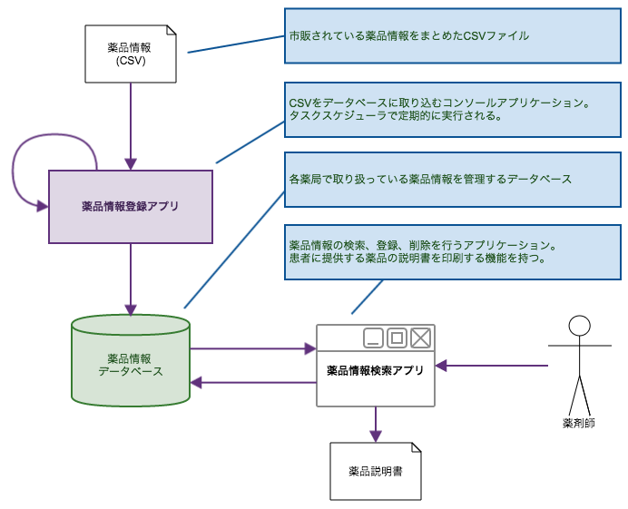
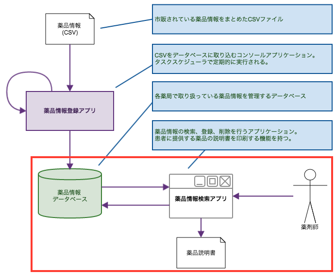
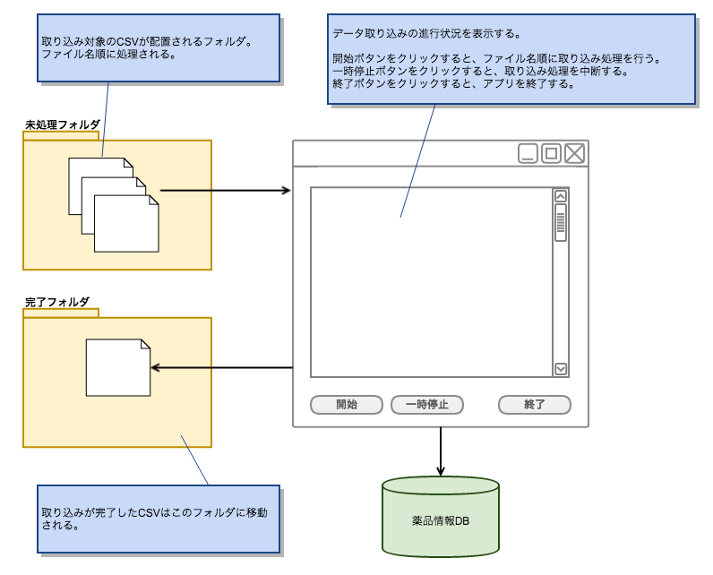

.NET Framework アプリケーション開発入門
.NET Frameworkを使用したクライアント アプリケーションの開発方法について解説します。
サンプル・アプリケーションのイメージ図
薬局内のPCにインストールされる「薬品情報管理システム」を題材とします。

各薬局には一般に流通している薬品情報がCSV形式で定期的 (1日1回) に配信されるものとします。
薬局内のPCでは、「薬品情報登録アプリ」が定期的に実行され、 配信されたCSVをそのPC内で稼働しているSQL Serverの特定テーブルに取り込みます。
薬剤師は「薬品情報検索アプリ」を使用して、取り込まれたデータを検索します。
CSVに登録されていないがその薬局で取り扱っている薬品情報は、薬剤師が「薬品情報検索アプリ」を使用して登録します。 また、登録したデータは変更、削除が可能です。 (CSVから登録された薬品は編集不可とします)
「薬品情報検索アプリ」は、薬局に来られたお客様にお渡しする「薬品説明書」を印刷する機能を持つものとします。
1. 簡単なコンソールアプリケーションの開発
GUIのないコンソールアプリケーションの作成を通して、Entity Frameworkを使用した データベースへのデータ登録、参照、更新、削除の操作について解説します。

- 参考
2. Windowsフォームアプリケーションの開発
SQL Serverの検索、登録、更新、削除を行うアプリケーションを作成します。

- 参考
- Windowsフォームアプリケーション プロジェクトの作成
- Entity Frameworkのインストール
- EDMの作成
- POCOの作成
- 検索処理の実装
- イベント処理の実装
- LINQによるデータ操作
- 更新処理の実装
- フォームの追加
- Entity Frameworkでのデータ更新、削除
- Officeファイルの操作
- EPPlusによるExcelファイルの作成
- Excelファイルの更新
- 印刷処理
- 動作確認
3. マルチスレッド対応

CSV取り込み時に進捗状況を表示するインターフェースを用意します。
取り込み処理中もアプリケーションが固まらないように、CSV読み込み・データ登録処理をバックグラウンドのスレッドで実行します。
- Windowsフォームアプリケーション プロジェクトの作成
- コントロールの配置、イベント処理の実装
- CSVファイルの読み込み
- フォルダ内のファイル一覧を取得
- ファイルの操作
- CSVファイルの読み込み処理の実装
- DB更新処理の実装
- Entity Frameworkのインストール
- EDMの作成
- POCOの作成
- DB登録
- マルチスレッド対応 - BackgroundWorker コンポーネントでのマルチスレッド
- 動作確認